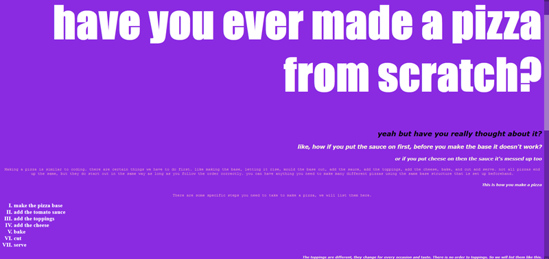
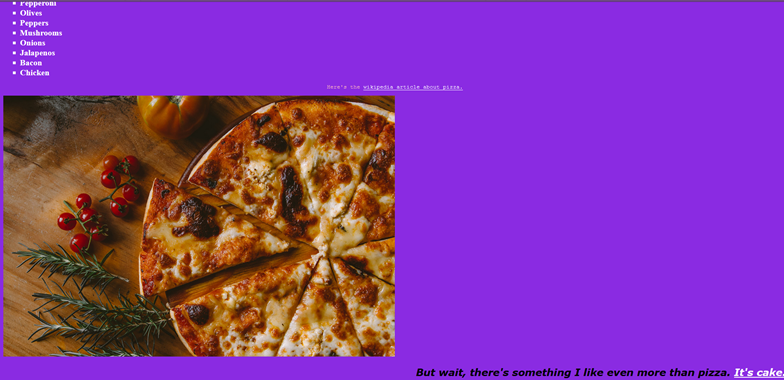
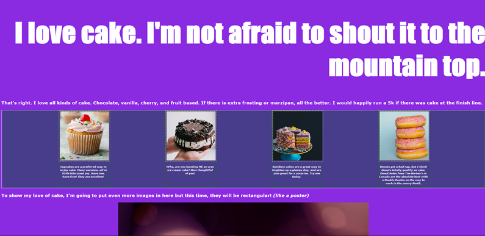
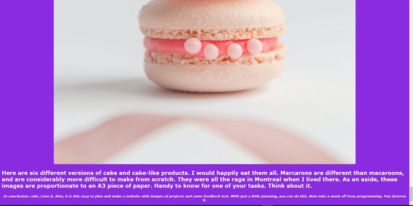
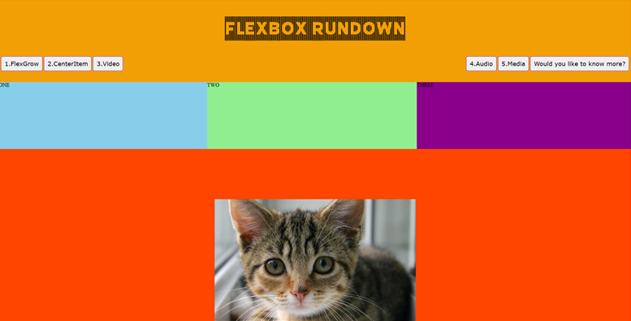
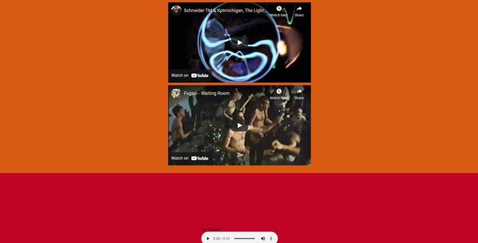

Task 2 / Github Worksheets
Coding Task / Pizza
 Here's the repository with both cake and pizza sheets.
Here is the finished product of the coding worksheets we have been doing as of late in our classes. So the first coding task was the pizza task, and what we have learnt in doing the pizza sheets is adding images and resizing them to fit correctly. We also did other things such as being able to link websites and add colour to HTML.It was also how we learned to set up GitHub for our first time and making our first repository. In this worksheet we also looked upon CSS, linking sheets together and such.
Coding Task / Cake
Then we had the cake coding task. Which had similar learning to the pizza tasks. But they also helped me improve upon my coding abilities.
 Flexbox Tasks.
Here's the repository with the flexbox task.
 Here is some screenshots of my flexbox worksheet. What we learned is how to centre images, embed audio and videos from YouTube. Also obviously using flexboxes. This worksheet helped me out a lot with how to use and code flexboxes into my own website. Oh also it helped with importing text from various websites such as the Adobe website.